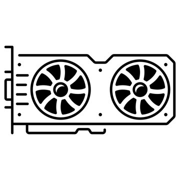

Evaluación y Pruebas
Las evaluaciones y pruebas son una parte importante para ver qué tanto hemos aprendido. A través de estas, podemos ver cómo estamos manejando los temas y mejorar lo que necesitemos.
Tipos de Pruebas Incluidas:
Ejercicio de Apareamiento
Debes conectar los conceptos importantes. Tienes dos columnas, una con términos y otra con definiciones, y tienes que emparejarlas correctamente.
| Columna A | Columna B |
|---|---|
| A) Memoria Caché | 1) Es donde guardamos los archivos y programas a largo plazo. |
| B) CPU | 2) Almacena temporalmente los datos mientras se usan. |
| C) Disco Duro | 3) Se usa para ejecutar los programas. |
Preguntas de Opción Múltiple
¿Cuál es el componente de la computadora que se encarga de hacer los cálculos y ejecutar los programas?
- A) Memoria RAM
- B) CPU
- C) Disco Duro
- D) Tarjeta Gráfica
Problema de Análisis
Estás trabajando en tu computadora y necesitas abrir un archivo guardado en tu disco duro. Sin embargo, tu computadora se apagó y no puedes acceder a la información. ¿Qué dispositivo utilizarías para solucionar esto?
- A) Memoria RAM
- B) Disco Duro
- C) Memoria Caché
Ejercicio de Relacionar Conceptos
Relaciona las siguientes palabras con sus respectivas definiciones.
| Columna A | Columna B |
|---|---|
| A) Tarjeta Gráfica | 1) Se usa para ejecutar los programas. |
| B) Procesador | 2) Almacena temporalmente los datos mientras se usan. |
| C) Memoria Caché | 3) Procesa y muestra los gráficos. |
Pregunta Verdadero o Falso
La memoria RAM es donde se almacenan permanentemente los archivos de la computadora.
- A) Verdadero
- B) Falso
Ejercicio de Selección de Imagen
Selecciona la imagen que representa el componente de la computadora encargado de mostrar los gráficos.
- A)

- B)
- C) 
Ejercicio de Completar la Definición
Completa la siguiente definición: "El ________ es el componente que permite la comunicación entre el procesador y la memoria."
- A) Bus de Datos
- B) Puente Norte
- C) Chipset
Ejercicio de Secuencia Lógica
¿Qué componente de la computadora debe activarse primero al encenderla?
- A) Memoria RAM
- B) Unidad de Arranque
- C) Disco Duro
Ejercicio de Relación de Conceptos
Relaciona correctamente las palabras con sus definiciones.
| Columna A | Columna B |
|---|---|
| A) GPU | 1) Es el componente central que ejecuta los programas. |
| B) CPU | 2) Procesa y muestra los gráficos. |
| C) RAM | 3) Almacena datos temporalmente para su rápido acceso. |
Ejercicio de Análisis de Proceso
Analiza el proceso de arranque de un sistema operativo y describe las etapas que se deben seguir.